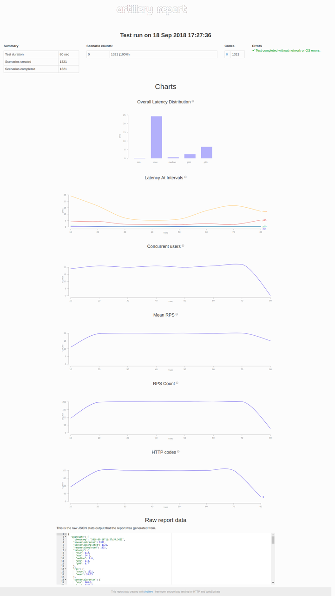

How To Load Testing WebSockets?
An important part of load testing is finding a right tool that fits our needs. Here are some tools for load testing websockets.
For this tutorial, we will be using artillery for load testing as it supports quick testing from command line as well as simulating real scenarios from yml config file. It also has inbuilt support for reports.
Install node & npm on the system with apt package manager.
$ sudo apt install -y nodejs npm
Install artillery with npm.
$ npm install -g artillery
Lets write a simple configuration file to test echo websocket at wss://echo.websocket.com
Artillery script is composed of two sections: config and scenarios. The config section defines the target, load, environment and other configurations. The scenarios section contains definitions of test cases that will be executed.
config:
target: "wss://echo.websocket.org"
phases:
- duration: 600
arrivalRate: 100
name: "Steady users"
scenarios:
- engine: "ws"
flow:
- send: "hello"
This script will create 100 virtual users every second for 600 seconds. Each virtual user will connect to the socket and send hello after websocket connection is established.
Save this script to a file called load.yml and run it.
$ artillery run load.yml -o results.json
Once load testing is completed, it will save results to results.json file. Artillery can convert this json to graphs for visualization. To see a detailed report, run
$ artillery report results.json
Here is a sample report generated with artillery.

For quick loadtesting and to see how server performs under given load, artillery will be sufficient. Artillery doesn't support websocket responses yet. For load testing scenarios based on websocket responses, Jmeter or tsung can be used.
Comments
Comments powered by Disqus